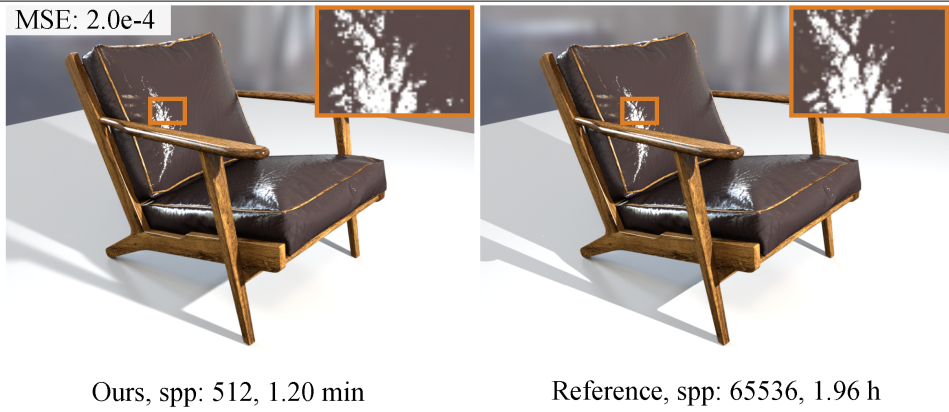

|
Ph.D. candidate PCA Lab, Key Lab of Intelligent Perception and Systems for High-Dimensional Information of Ministry of Education, School of Computer Science and Engineering, Nanjing University of Science and Technology, Nanjing, China |
< Hello, there! |
Neural-based Appearance Modeling.
Micro-facet Model.
Depth Completion.
*: corresponding author(s).
|  |
Efficient Specular Glints Rendering with Differentiable Regularization, IEEE Transactions on Visualization and Computer Graphics , DOI: 10.1109/tvcg.2022.3144479. [URL] |